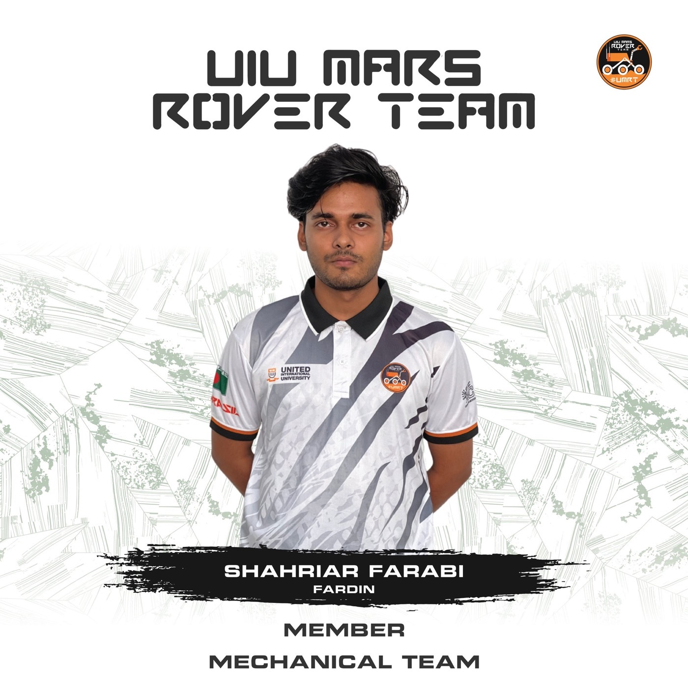

Mechanical design · Research & development
UIU Mars Rover Team
3D designer & fabricator
Designed and fabricated tools, drone components, autonomous modules, and enclosures for sensitive electronics.
Research & development
Developed a hybrid chemical lab environment with a motorized camera and an induction system.